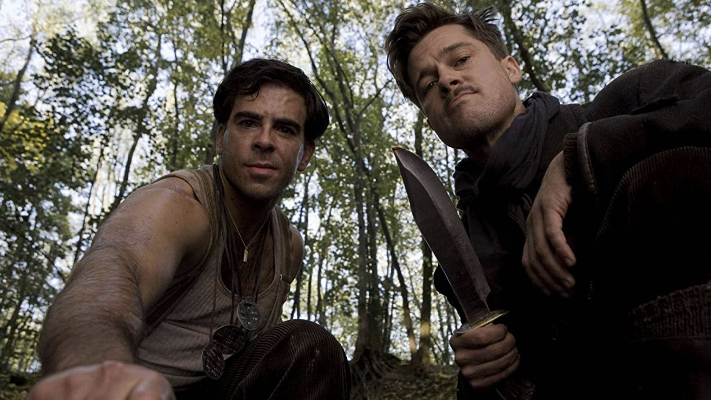

Inglorious Basterds, a 2009 film directed by Quentin Tarantino,
is a unique and thrilling war movie that challenges conventional notions of the genre. The film, set in
Nazi-occupied France during World War II, follows a group of Jewish-American soldiers on a mission to take
down the Third Reich’s leadership, and it’s a wild ride from start to finish. With its unconventional
storyline, larger-than-life characters, and Tarantino’s signature style, Inglorious Basterds was a film
unlike any other. The film’s impact on the film industry was substantial, as it showed that war movies could
be both entertaining and thought-provoking. The film’s depiction of the war challenged conventional notions
of heroism and villainy, and it used a highly stylized approach to tell its story. This was a departure from
the more straightforward, traditional war movies of the past, and it inspired a new generation of filmmakers
to take risks and push the boundaries of the genre. In addition to its impact on the film industry,
Inglorious Basterds also had a significant impact on popular culture. The film’s larger-than-life characters
and memorable dialogue quickly became a part of the cultural lexicon, and its depiction of the war and its
characters has inspired countless other works of fiction. The film’s unique take on World War II and its
fearless approach to storytelling have made it a cult classic, and it continues to be widely discussed and
debated to this day. Inglorious Basterds was a critical and commercial success, and it received numerous
awards and nominations. The film was nominated for eight Academy Awards, including Best Picture, and it won
the award for Best Supporting Actor for Christoph Waltz’s portrayal of SS Colonel Hans Landa. The film’s
success cemented Quentin Tarantino’s reputation as a visionary filmmaker who is not afraid to take risks and
challenge conventions. In conclusion, Inglorious Basterds is a film that defies convention and pushes the
boundaries of the war movie genre. Its impact on the film industry and popular culture has been substantial,
and its legacy continues to be felt to this day. Whether you are a fan of war movies or just enjoy great films,
Inglorious Basterds is a movie that should not be missed.